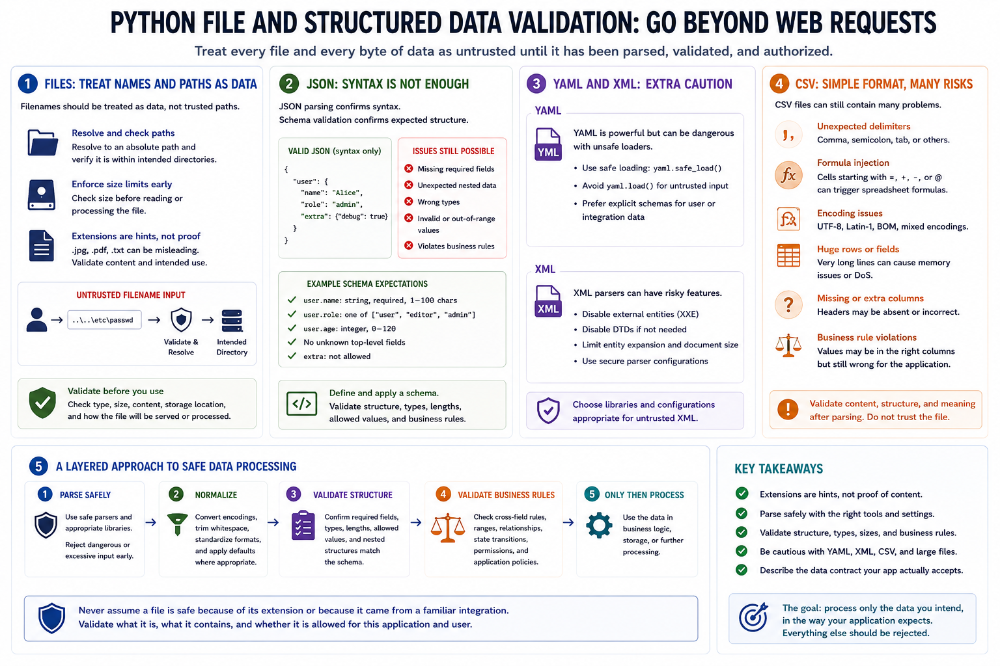

Validating Files and Structured Data
Connecting to LMS... Progress: in progress

Narration
Python is frequently used to process files and structured data, so validation must go beyond web requests. Filenames should be treated as data, not trusted paths. File paths should be resolved and checked against intended directories. File size limits should be enforced before expensive processing. Extensions can be useful hints, but they should not be treated as proof of file content.
JSON parsing confirms syntax, but schema validation confirms expected structure. A valid JSON object may still be missing required fields, contain unexpected nested data, or use wrong types. YAML requires extra caution because unsafe loaders can process data in dangerous ways. Prefer safe loading behavior and explicit schemas when YAML is accepted from users or integrations.
XML risks should be understood at a high level. XML parsers can behave differently depending on features, external entities, and resource handling. Developers should use safe parser configurations and libraries appropriate for untrusted XML. CSV files look simple, but they can contain unexpected delimiters, formulas, encodings, huge rows, missing columns, and data that violates business rules after import.
Structured data validation should be layered. First parse safely, then normalize where appropriate, then validate structure, types, sizes, and business rules. Avoid assuming that a file is safe because the extension looks right or because it came from a familiar integration. The validation contract should describe the data the application actually intends to process.